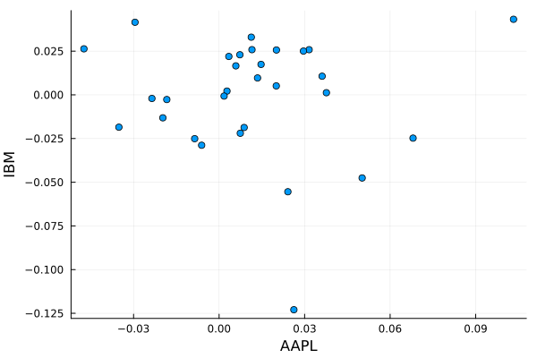

Basic demo of TSx using financial data
Create a TS object for IBM historical data
To load the IBM historical data, we will use the MarketData.yahoo function from MarketData.jl, which returns the data in the form of a TimeArray. We just simply pass this on to the TS constructor.
julia> using TSx, MarketData, DataFrames, Dates, Plots, Statisticsjulia> ibm_ts = TS(MarketData.yahoo(:IBM))13051×6 TS with Date Index Index Open High Low Close AdjClose Volume ⋯ Date Float64 Float64 Float64 Float64 Float64 Float64 ⋯ ──────────────────────────────────────────────────────────────────────────────── 1971-02-08 16.0851 16.336 15.8939 16.2882 3.84815 719648.0 ⋯ 1971-02-09 16.2882 16.3121 16.1687 16.1807 3.82274 673624.0 1971-02-10 16.1568 16.1568 15.9775 16.1209 3.80862 648520.0 1971-02-11 16.1209 16.2285 16.097 16.1926 3.82556 579484.0 1971-02-12 16.1926 16.2285 16.1329 16.2285 3.83403 382836.0 ⋯ 1971-02-16 16.2285 16.4197 16.1926 16.3301 3.85803 684084.0 1971-02-17 16.2703 16.2703 16.0492 16.0851 3.80015 652704.0 1971-02-18 16.0851 16.1209 15.7385 15.7385 3.71828 822156.0 ⋮ ⋮ ⋮ ⋮ ⋮ ⋮ ⋮ ⋱ 2022-10-26 133.72 135.86 132.81 135.01 135.01 5.139e6 ⋯ 2022-10-27 135.55 136.4 134.45 134.77 134.77 3.9932e6 2022-10-28 135.56 138.86 135.22 138.51 138.51 5.9655e6 2022-10-31 138.06 138.77 136.6 138.29 138.29 4.9153e6 2022-11-01 138.25 138.65 136.7 138.2 138.2 3.5906e6 ⋯ 2022-11-02 137.75 140.17 136.8 136.83 136.83 5.3605e6 2022-11-03 136.42 136.48 133.97 134.47 134.47 4.4413e6 13036 rows omitted
Create TS object for AAPL
Similarly, we can create a TS object for the AAPL data.
julia> aapl_ts = TS(MarketData.yahoo(:AAPL))10564×6 TS with Date Index Index Open High Low Close AdjClose Volum ⋯ Date Float64 Float64 Float64 Float64 Float64 Float ⋯ ──────────────────────────────────────────────────────────────────────────────── 1980-12-12 0.128348 0.128906 0.128348 0.128348 0.100039 4.690 ⋯ 1980-12-15 0.12221 0.12221 0.121652 0.121652 0.09482 1.758 1980-12-16 0.113281 0.113281 0.112723 0.112723 0.087861 1.057 1980-12-17 0.115513 0.116071 0.115513 0.115513 0.090035 8.644 1980-12-18 0.118862 0.11942 0.118862 0.118862 0.092646 7.344 ⋯ 1980-12-19 0.126116 0.126674 0.126116 0.126116 0.0983 4.863 1980-12-22 0.132254 0.132813 0.132254 0.132254 0.103084 3.736 1980-12-23 0.137835 0.138393 0.137835 0.137835 0.107434 4.695 ⋮ ⋮ ⋮ ⋮ ⋮ ⋮ ⋮ ⋱ 2022-10-26 150.96 151.99 148.04 149.35 149.35 8.819 ⋯ 2022-10-27 148.07 149.05 144.13 144.8 144.8 1.091 2022-10-28 148.2 157.5 147.82 155.74 155.74 1.647 2022-10-31 153.16 154.24 151.92 153.34 153.34 9.794 2022-11-01 155.08 155.45 149.13 150.65 150.65 8.037 ⋯ 2022-11-02 148.95 152.17 145.0 145.03 145.03 9.360 2022-11-03 142.06 142.8 138.75 138.88 138.88 9.757 1 column and 10549 rows omitted
Create a 6-month subset of stock data
We would like to compare the stock returns for both the stocks for 6 months starting from June 1, 2021 till December 31, 2021. We use TSx.subset method to create new objects which contain the specified duration of data.
julia> date_from = Date(2021, 06, 01);julia> date_to = Date(2021, 12, 31);julia> ibm = TSx.subset(ibm_ts, date_from, date_to)150×6 TS with Date Index Index Open High Low Close AdjClose Volume Date Float64 Float64 Float64 Float64 Float64 Float64 ───────────────────────────────────────────────────────────────────── 2021-06-01 138.623 139.417 137.428 137.849 129.658 2.5287e6 2021-06-02 138.26 139.34 137.772 139.312 131.034 2.9151e6 2021-06-03 138.537 139.465 137.706 139.149 130.881 4.32061e6 2021-06-04 139.579 141.061 139.35 140.937 132.563 3.26132e6 2021-06-07 141.061 142.199 140.698 141.511 133.102 3.62198e6 2021-06-08 141.606 143.595 141.606 142.514 134.047 5.31378e6 2021-06-09 142.476 144.426 142.275 144.044 135.485 5.54725e6 2021-06-10 144.809 146.119 143.174 143.92 135.369 4.97739e6 ⋮ ⋮ ⋮ ⋮ ⋮ ⋮ ⋮ 2021-12-22 129.06 129.79 127.6 129.75 125.093 3.9232e6 2021-12-23 130.0 130.96 129.52 130.63 125.941 3.649e6 2021-12-27 130.63 131.65 129.95 131.62 126.896 4.2939e6 2021-12-28 131.6 133.22 131.59 132.63 127.87 3.4452e6 2021-12-29 132.4 134.21 132.3 133.35 128.564 4.2399e6 2021-12-30 133.75 134.37 133.33 133.91 129.104 3.1581e6 2021-12-31 134.0 134.99 133.61 133.66 128.863 3.3621e6 135 rows omitted
julia> aapl = TSx.subset(aapl_ts, date_from, date_to)150×6 TS with Date Index Index Open High Low Close AdjClose Volume Date Float64 Float64 Float64 Float64 Float64 Float64 ───────────────────────────────────────────────────────────────────── 2021-06-01 125.08 125.35 123.94 124.28 123.403 6.76371e7 2021-06-02 124.28 125.24 124.05 125.06 124.177 5.92789e7 2021-06-03 124.68 124.85 123.13 123.54 122.668 7.62292e7 2021-06-04 124.07 126.16 123.85 125.89 125.001 7.51693e7 2021-06-07 126.17 126.32 124.83 125.9 125.011 7.10576e7 2021-06-08 126.6 128.46 126.21 126.74 125.845 7.44038e7 2021-06-09 127.21 127.75 126.52 127.13 126.232 5.68779e7 2021-06-10 127.02 128.19 125.94 126.11 125.22 7.11864e7 ⋮ ⋮ ⋮ ⋮ ⋮ ⋮ ⋮ 2021-12-22 173.04 175.86 172.15 175.64 174.916 9.21353e7 2021-12-23 175.85 176.85 175.27 176.28 175.554 6.83566e7 2021-12-27 177.09 180.42 177.07 180.33 179.587 7.49196e7 2021-12-28 180.16 181.33 178.53 179.29 178.551 7.91443e7 2021-12-29 179.33 180.63 178.14 179.38 178.641 6.23489e7 2021-12-30 179.47 180.57 178.09 178.2 177.466 5.9773e7 2021-12-31 178.09 179.23 177.26 177.57 176.838 6.40623e7 135 rows omitted
Combine adjusted closing prices of both stocks into one object
We now join (cbind) both the stocks' data into a single object for further analysis. We use TSx.join to create two columns containing adjusted closing prices of both the stocks. The join happens by comparing the Index values (dates) of the two objects. The resulting object contains two columns with exactly the same dates for which both the objects have data, all the other rows are omitted from the result.
julia> ibm_aapl = TSx.join(ibm[:, ["AdjClose"]], aapl[:, ["AdjClose"]], JoinBoth)150×2 TS with Date Index Index AdjClose AdjClose_1 Date Float64 Float64 ────────────────────────────────── 2021-06-01 129.658 123.403 2021-06-02 131.034 124.177 2021-06-03 130.881 122.668 2021-06-04 132.563 125.001 2021-06-07 133.102 125.011 2021-06-08 134.047 125.845 2021-06-09 135.485 126.232 2021-06-10 135.369 125.22 ⋮ ⋮ ⋮ 2021-12-22 125.093 174.916 2021-12-23 125.941 175.554 2021-12-27 126.896 179.587 2021-12-28 127.87 178.551 2021-12-29 128.564 178.641 2021-12-30 129.104 177.466 2021-12-31 128.863 176.838 135 rows omittedjulia> TSx.rename!(ibm_aapl, [:IBM, :AAPL])150×2 TS with Date Index Index IBM AAPL Date Float64 Float64 ────────────────────────────── 2021-06-01 129.658 123.403 2021-06-02 131.034 124.177 2021-06-03 130.881 122.668 2021-06-04 132.563 125.001 2021-06-07 133.102 125.011 2021-06-08 134.047 125.845 2021-06-09 135.485 126.232 2021-06-10 135.369 125.22 ⋮ ⋮ ⋮ 2021-12-22 125.093 174.916 2021-12-23 125.941 175.554 2021-12-27 126.896 179.587 2021-12-28 127.87 178.551 2021-12-29 128.564 178.641 2021-12-30 129.104 177.466 2021-12-31 128.863 176.838 135 rows omitted
After the join operation the column names are modified because we merged two same-named columns (AdjClose) so we use TSx.rename!() method to rename the columns to easily remembered stock names.
Convert data into weekly frequency using last values
Here, we convert daily stock data into weekly frequency by taking the value with which the trading closed on the last day of the week as the week's price.
julia> ep = endpoints(ibm_aapl, Week(1));julia> ibm_aapl_weekly = ibm_aapl[ep]31×2 TS with Date Index Index IBM AAPL Date Float64 Float64 ────────────────────────────── 2021-06-04 132.563 125.001 2021-06-11 136.034 126.451 2021-06-18 128.696 129.539 2021-06-25 132.041 132.17 2021-07-02 125.909 138.972 2021-07-09 127.258 144.086 2021-07-16 124.902 145.356 2021-07-23 127.096 147.511 ⋮ ⋮ ⋮ 2021-11-19 111.885 159.888 2021-11-26 111.653 156.164 2021-12-03 114.575 161.173 2021-12-10 119.636 178.71 2021-12-17 122.827 170.435 2021-12-23 125.941 175.554 2021-12-31 128.863 176.838 16 rows omitted
Compute weekly returns using the familiar log and diff functions
julia> ibm_aapl_weekly_returns = diff(log.(ibm_aapl_weekly))31×2 TS with Date Index Index IBM_log AAPL_log Date Float64? Float64? ──────────────────────────────────────────────── 2021-06-04 missing missing 2021-06-11 0.0258468 0.0115307 2021-06-18 -0.0554491 0.0241275 2021-06-25 0.0256601 0.0201091 2021-07-02 -0.0475582 0.0501809 2021-07-09 0.0106558 0.0361352 2021-07-16 -0.0186868 0.00878213 2021-07-23 0.0174141 0.0147147 ⋮ ⋮ ⋮ 2021-11-19 -0.0247661 0.0680369 2021-11-26 -0.00207027 -0.0235706 2021-12-03 0.0258271 0.0315733 2021-12-10 0.043229 0.103289 2021-12-17 0.0263247 -0.0474147 2021-12-23 0.0250372 0.0295916 2021-12-31 0.0229304 0.00729125 16 rows omittedjulia> TSx.rename!(ibm_aapl_weekly_returns, [:IBM, :AAPL])31×2 TS with Date Index Index IBM AAPL Date Float64? Float64? ──────────────────────────────────────────────── 2021-06-04 missing missing 2021-06-11 0.0258468 0.0115307 2021-06-18 -0.0554491 0.0241275 2021-06-25 0.0256601 0.0201091 2021-07-02 -0.0475582 0.0501809 2021-07-09 0.0106558 0.0361352 2021-07-16 -0.0186868 0.00878213 2021-07-23 0.0174141 0.0147147 ⋮ ⋮ ⋮ 2021-11-19 -0.0247661 0.0680369 2021-11-26 -0.00207027 -0.0235706 2021-12-03 0.0258271 0.0315733 2021-12-10 0.043229 0.103289 2021-12-17 0.0263247 -0.0474147 2021-12-23 0.0250372 0.0295916 2021-12-31 0.0229304 0.00729125 16 rows omitted
Compute standard deviation of weekly returns
Computing standard deviation is done using the std function from Statistics package. The skipmissing is used to skip missing values which may have been generated while computing log returns or were already present in the data.
julia> ibm_std = std(skipmissing(ibm_aapl_weekly_returns[:, :IBM]))0.034079308111816746
julia> aapl_std = std(skipmissing(ibm_aapl_weekly_returns[:, :AAPL]))0.030582289462582592
Scatter plot of AAPL and IBM
Here, we use the Plots package to create a scatter plot with IBM weekly returns on the x-axis and Apple weekly returns on the y-axis.
plot(ibm_aapl_weekly_returns[:, :AAPL],
ibm_aapl_weekly_returns[:, :IBM],
seriestype = :scatter;
xlabel = "AAPL",
ylabel = "IBM",
legend = false)